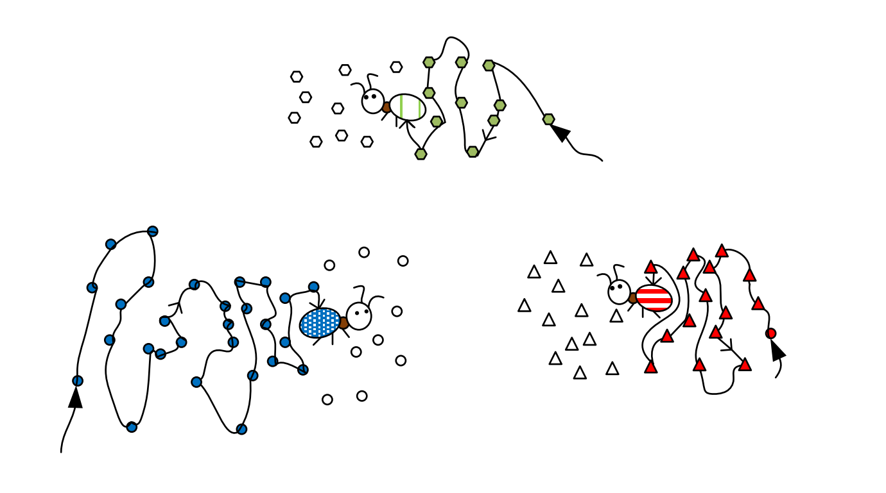
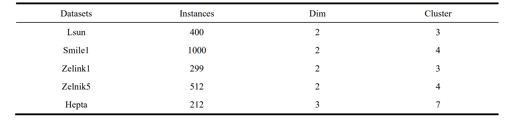
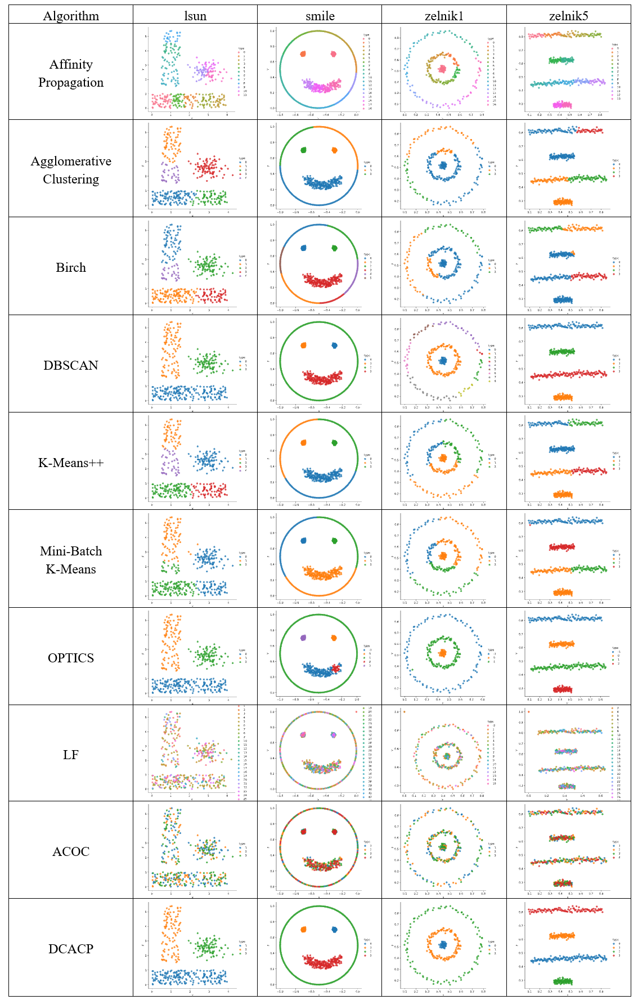

A Dyeing Clustering Algorithm based on Ant Colony Path-finding Mechanism
Abstract
Introduction
Background: Clustering can be applied to a variety of life scenes, for example, clustering biological data can help us develop drugs to treat diseases like CVOID-19 and breast cancer, and clustering weather data can help us prevent natural disasters such as earthquakes and volcanic eruptions. Although clustering is widely used, the existing clustering methods often have such problems: (1) the capture of data features is not clear. (2) the number of clusters needs to be specified in advance. (3) the fault tolerance is low. Therefore, in this paper, a Dyeing Clustering algorithm based on Ant Colony Path-finding (DCACP), is proposed to solve these problems.
Motiviton:Most of the traditional clustering algorithms have achieved the purpose of clustering, they often have these shortcomings. (1) The relationship between points is only processed by Euclidean distance quantization, so the capture of the relationship is still limited, which is difficult to deal with high-dimensional data. (2) The number of clusters needs to be specified in advance before clustering, and the algorithm is often subjective, so the selection of parameters has certain restrictions on the clustering results. (3) It is necessary to find the center of each cluster for clustering, which has a good effect on Gaussian distribution data sets, but the performance is poor on other types of data sets. Therefore, we propose a more accurate algorithm, which not only does not need to specify the number of clusters, but also automatically generates the target results by the swarm intelligence through this structure, and is suitable for all kinds of data distribution. In particular, the idea of applicating dyeing to ant colony clustering will inspire artificial intelligence systems.
Our algorithm includes the following 4 parts. (1) Ant Colony Generation Model. (2) Path-finding Model. (3) Path-finding Termination Model. (4) Dyeing Clustering. To evaluate the algorithm, we selected 2 simulation data sets, 5 artificial data sets, 5 real-world data sets, 9 comparison algorithms and 8 evaluation indexes. According to 30-round experiments, 7 of the 8 evaluation indexes show DCACP algorithm is more advantageous than other comparison algorithms.

Schematic diagram of ant colony dyeing clustering
Evaluation
In order to verify the performance of the algorithm, experiments were compared with a variety of well-known clustering algorithms, including classical algorithms based on Message Passing, Hierarchical, Density, Partitioning, and Ant Clustering.
Comparison algorithms
The datasets used in this experiment are divided into three parts, which are simulated data set, artificial data set and real-world data set for algorithm verification. For the simulation data set, we established 2 types of data distribution with Gaussian distribution characteristics. Since most cluster structures have this characteristic, they are used to verify the correctness of the algorithm. In addition, in order to better demonstrate the applicability of the algorithm, we use 5 artificial datasets , and the data in these datasets show different distributions. Finally, in order to prove that the algorithm can deal with various challenges of clustering tasks in real world, we use five real data sets as verification
Artificial datasets
Real-world datasets
In terms of evaluation indicators, we adopt 8 evaluation indicators, which can measure the clustering effect from different angles, so as to obtain objective and comprehensive evaluation and analysis.

Evaluation indicators
Experiments

The path information of ant colonies under different synthetic data sets

Changes in the dyeing results of synthetic data set 2 under different iterations

The average clustering results of DCACP algorithm over 30 independent runs on all artificial datasets.

2D distribution diagram of clustering results
Clustering results on the ‘hepta’ dataset
The average clustering results of DCACP algorithm over 30 independent runs on all real-world datasets.
Conclution
Clustering can be applied to various industries. Examples with similar attributes are classified into the same cluster, and hidden rules and knowledge in various industries are explored through unsupervised learning. In this paper, a bionic algorithm DCACP is proposed, which completes clustering by the dyeing mechanism of the ant colony. This study applies bionics to artificial intelligence systems and innovatively proposes the idea of dyeing. The combination of dyeing and pheromone will provide a reference for researchers of the clustering algorithm. The idea of combining bionics and artificial intelligence is helpful for the innovation of artificial intelligence systems. The algorithm conducts system modelling around the four objectives of ant generation, path finding, termination finding and dyeing clustering, and finally forms the DCACP architecture. It has a good clustering effect on virtual datasets and real-world datasets. However, there is still room for improvement in time complexity, so the next work will still take bionics as the perspective to further improve the accuracy of the algorithm while considering the redundancy problem. Later research will continue to expand the research objectives, aimed at applying it in engineering applications research.